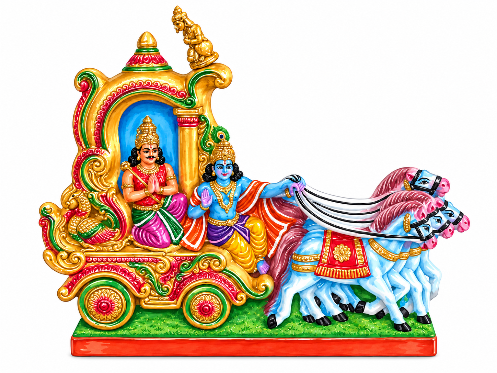

Golu story
Bhagavad Gita
Krishna guides Arjuna through a moment of doubt, duty, and purpose.

The Mahabharata & Bhagavad Gita: An Epic Within an Epic
The Mahabharata, roughly translated as "The Great Indian Tale" or "The Story of the Great Descendants of Bharata," is either the longest or second-longest epic poem in the world (depending on the metrics used — the other contender is the Epic of Manas). At approximately 1.8 million words, it is ten times the length of the Iliad and Odyssey combined. Much of it is written in Anushtubh meter (32 syllables per stanza), and like the Greek epics, it's filled with political intrigue, military strategy, war, romance, betrayal, and complicated family drama. At its heart is a dynastic struggle between two branches of a royal family, the Pandavas (5 brothers - morally gray protagonists) and Kauravas (100 cousins of Pandavas - morally gray antagonists), that eventually culminates in a devastating war.
Much like the Iliad, the Mahabharata is understood as an epic with historical roots, with events and characters elaborated through centuries of storytelling. Exactly when those events occurred remains a subject of considerable debate, with proposed dates spanning thousands of years. Some researchers, drawing on ancient historical accounts (i.e. 1500-2000 yr old historians and archeologists) and astronomical observations described in the epic, place the events around 3000 BCE or earlier. Others, drawing more heavily on material culture, descriptions of warfare, and what we know of ancient Indian culture through archeology suggest dates closer to 1000 BCE (interestingly, around the period traditionally associated with the Trojan War). These approaches examine different kinds of evidence, and neither has established a universally accepted date. The dating of the events is also a separate question from when the epic was composed and compiled into the text we know today.
So what is this scene?
The Bhagavad Gita is a 700-verse philosophical dialogue embedded within the Mahabharata, set moments before the war begins. Arjuna, one of the greatest Pandava warriors, realizes that the opposing army includes his cousins, teachers, and relatives. Overcome with grief and moral uncertainty, he lowers his bow and refuses to fight. His charioteer, Krishna (more on him later) responds with an extended conversation about duty, morality, the nature of the self, and the meaning of existence.
The Gita is essentially a crash course in Vedanta, i.e. the teaching goal of the Vedas. For context, the Vedas are the oldest sacred scriptures of Hinduism. The Vedas read more like dense philosophical treatises than conventional stories on morality / parables. The Gita makes many of these ideas more accessible by presenting them through a conversation between two characters facing a very human dilemma. This is partly why it has become one of Hinduism's most widely read and influential texts.
The Gita is often used when Hindus take religious oaths in court or public office.
Central to the Gita is the concept of dharma (roughly, one's moral duty) and the idea that we should act according to what is right without becoming attached to the outcome. What happens when duty conflicts with personal convictions? How do you choose when every option has terrible consequences? And how do you act when you cannot control the outcome?
This Golu set depicts Krishna and Arjuna in their chariot, capturing one of the most famous philosophical conversations in Indian literature.